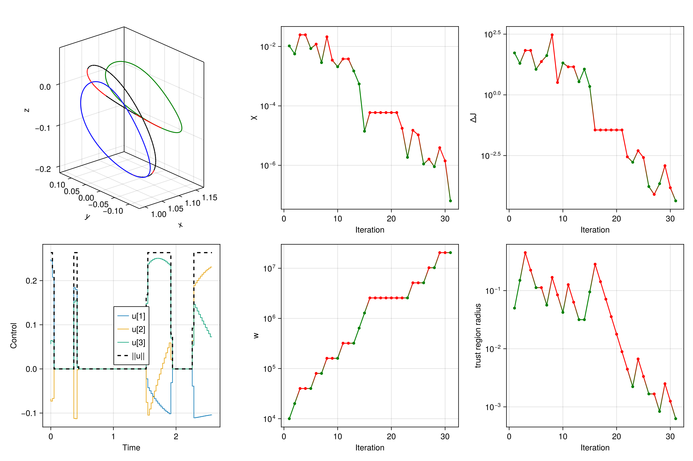

Quickstart
Import modules
We will start with a simple, fixed-time optimal control problem.
using Clarabel
using GLMakie
using JuMP
using LinearAlgebra
using OrdinaryDiffEq
using SCPLibDefine dynamics
We will first define and instantiate a struct that will hold the control, along with any parameters we may want to pass to the equations of motion:
# create parameters with `u` entry
mutable struct ControlParams
μ::Float64
u::Vector
function ControlParams(μ::Float64)
new(μ, zeros(4))
end
end
μ = 1.215058560962404e-02
DU = 389703 # km
TU = 382981 # sec
MU = 500.0 # kg
VU = DU/TU # km/s
params = ControlParams(μ)We will now define an equations of motion
function eom!(drv, rv, p, t)
x, y, z = rv[1:3]
vx, vy, vz = rv[4:6]
r1 = sqrt( (x+p.μ)^2 + y^2 + z^2 );
r2 = sqrt( (x-1+p.μ)^2 + y^2 + z^2 );
drv[1:3] = rv[4:6]
# derivatives of velocities
drv[4] = 2*vy + x - ((1-p.μ)/r1^3)*(p.μ+x) + (p.μ/r2^3)*(1-p.μ-x);
drv[5] = -2*vx + y - ((1-p.μ)/r1^3)*y - (p.μ/r2^3)*y;
drv[6] = -((1-p.μ)/r1^3)*z - (p.μ/r2^3)*z;
# append controls
drv[4:6] += p.u[1:3]
return
endDefine problem
We will now define boundary conditions
rv0 = [1.0809931218390707E+00,
0.0000000000000000E+00,
-2.0235953267405354E-01,
1.0157158264396639E-14,
-1.9895001215078018E-01,
7.2218178975912707E-15]
period_0 = 2.3538670417546639E+00
rvf = [1.1648780946517576,
0.0,
-1.1145303634437023E-1,
0.0,
-2.0191923237095796E-1,
0.0]
period_f = 3.3031221822879884We can now define the objective function
function objective(x, u)
return sum(u[4,:])
endWe will now define the problem parameters
N = 100
nx = 6
nu = 4 # [ux,uy,uz,Γ]
tf = 2.6
times = LinRange(0.0, tf, N)
thrust = 0.35 # N
umax = thrust/MU/1e3 / (VU/TU)We will now define an initial guess by propagating the initial and final boundary conditions
# initial & final LPO
sol_lpo0 = solve(
ODEProblem(eom!, rv0, [0.0, period_0], params),
Tsit5(); reltol = 1e-12, abstol = 1e-12
)
sol_lpof = solve(
ODEProblem(eom!, rvf, [0.0, period_f], params),
Tsit5(); reltol = 1e-12, abstol = 1e-12
)
# create reference solution
x_along_lpo0 = sol_lpo0(LinRange(0.0, period_0, N))
x_along_lpof = sol_lpof(LinRange(0.0, period_f, N))
x_ref = zeros(nx,N)
alphas = LinRange(0,1,N)
for (i,alpha) in enumerate(alphas)
x_ref[:,i] = (1-alpha)*x_along_lpo0[:,i] + alpha*x_along_lpof[:,i]
end
u_ref = zeros(nu, N-1)then, we instantiate the problem struct
prob = SCPLib.ContinuousProblem(
Clarabel.Optimizer,
eom!,
params,
objective,
times,
x_ref,
u_ref;
eom_aug! = eom_aug!,
ode_method = Vern7(),
)
set_silent(prob.model) # we will silence the convex program
# append boundary conditions
@constraint(prob.model, constraint_initial_rv, prob.model[:x][:,1] == rv0)
@constraint(prob.model, constraint_final_rv, prob.model[:x][:,end] == rvf)
# append constraints on control magnitude
@constraint(prob.model, constraint_associate_control[k in 1:N-1],
[prob.model[:u][4,k], prob.model[:u][1:3,k]...] in SecondOrderCone())
@constraint(prob.model, constraint_control_magnitude[k in 1:N-1],
prob.model[:u][4,k] <= umax)Instantiate algorithm & solve problem
algo = SCPLib.SCvxStar(nx, N; w0 = 1e4)
solution = SCPLib.solve!(algo, prob, x_ref, u_ref; maxiter = 100)Analyze solution
# propagate controlled trajectory solution
sols_opt, g_dynamics_opt = SCPLib.get_trajectory(prob, solution.x, solution.u)
arc_colors = [
solution.u[4,i] > 1e-6 ? :red : :black for i in 1:N-1
]
for (i, _sol) in enumerate(sols_opt)
lines!(ax3d, Array(_sol)[1,:], Array(_sol)[2,:], Array(_sol)[3,:], color=arc_colors[i])
end
# plot controls
ax_u = Axis(fig[2,1]; xlabel="Time", ylabel="Control")
for i in 1:3
stairs!(ax_u, prob.times[1:end-1], solution.u[i,:], label="u[$i]", step=:pre, linewidth=1.0)
end
stairs!(ax_u, prob.times[1:end-1], solution.u[4,:], label="||u||", step=:pre, linewidth=2.0, color=:black, linestyle=:dash)
axislegend(ax_u, position=:cc)
# plot iterate information
colors_accept = [solution.info[:accept][i] ? :green : :red for i in 1:length(solution.info[:accept])]
ax_χ = Axis(fig[1,2]; xlabel="Iteration", ylabel="χ", yscale=log10)
scatterlines!(ax_χ, 1:length(solution.info[:accept]), solution.info[:χ], color=colors_accept, marker=:circle, markersize=7)
ax_w = Axis(fig[2,2]; xlabel="Iteration", ylabel="w", yscale=log10)
scatterlines!(ax_w, 1:length(solution.info[:accept]), solution.info[:w], color=colors_accept, marker=:circle, markersize=7)
ax_J = Axis(fig[1,3]; xlabel="Iteration", ylabel="ΔJ", yscale=log10)
scatterlines!(ax_J, 1:length(solution.info[:accept]), abs.(solution.info[:ΔJ]), color=colors_accept, marker=:circle, markersize=7)
ax_Δ = Axis(fig[2,3]; xlabel="Iteration", ylabel="trust region radius", yscale=log10)
scatterlines!(ax_Δ, 1:length(solution.info[:accept]), [minimum(val) for val in solution.info[:Δ]], color=colors_accept, marker=:circle, markersize=7)
display(fig)